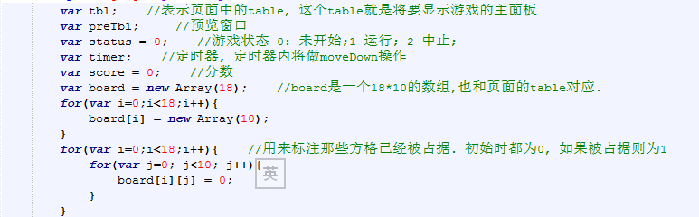
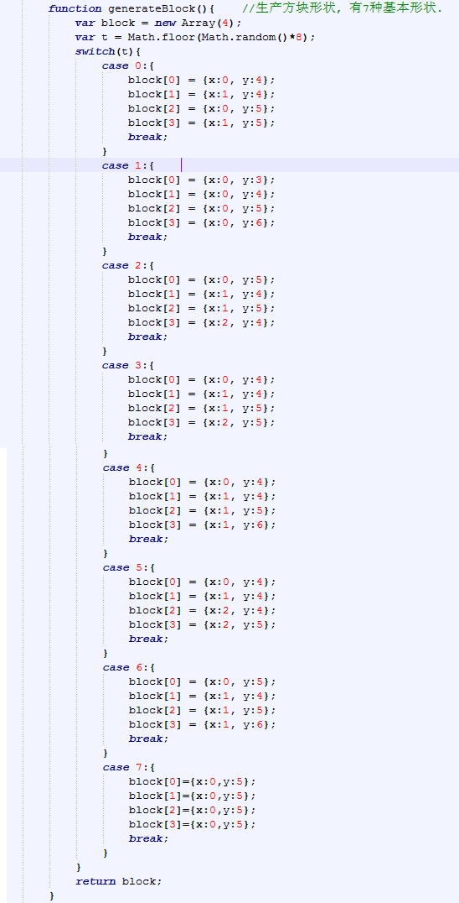
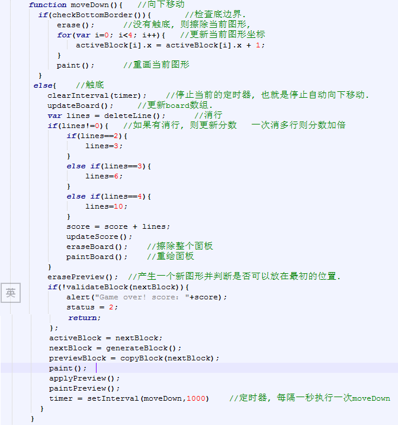
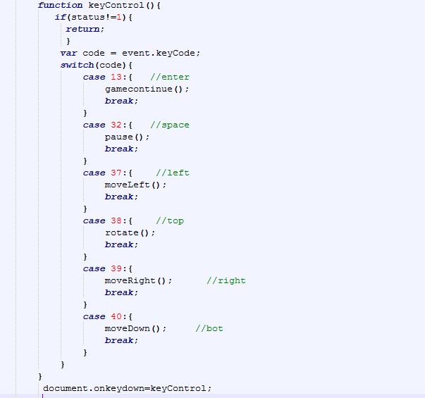

此次的课程设计选择的题目是俄罗斯方块，俄罗斯方块是一款经典的小游戏,是一款伴随着童年成长的娱乐小游戏。通过本学期web前端开发课程的学习，利用学到的html，css和javascript知识编写了简单的俄罗斯方块游戏，页面设计较为简单。规则也很简单：点击开始，7种形状的方块随机产生，自由下落，可通过键盘的上下左右键控制方块的下落、移动、旋转。若方块填满一行或多行，则会消去满的行，分数加1，直到新方块没有位置下落，游戏结束。
游戏的主界面由stable生成，方块则是由相应坐标的单元格生成，方块的运动有：向左：方块的横坐标-1;向右：方块的横坐标+1;向下：减小计时器setInterval函数的第二个参数，得到方块加速下降的效果l;向上：方块旋转变形, 一个点坐标相对另外一个点坐标旋转90度。每次向下移动，都检查是否触底，如果触底，则尝试消行，每次构造出一个新的方块，直至游戏判定为结束为止。
在html中使用javascript生成table，游戏界面的行数设为18，列数设为10。代码如下：
定义一个长度为4的数组，数组每一项存储方块的坐标，一共有七种形状的方块，调用随机函数生成任一方块，并返回该方块。代码如下：
方块下落，先检查底部边界，没有触底，则擦除当前图形，更新当前图形坐标，重画当前图形，触底，则停止当前的定时器clearInterval(timer),判断是否能消行，擦除整个面板，重绘面板，产生一个新图形并判断是否可以放在最初的位置，设置定时器, 每隔一秒执行一次方块下落。代码如下：
通过上、下、左、右、空格、回车键，控制方块的旋转、下落、左移、右移、暂停、恢复的操作。代码如下：
在本次游戏编写过程中，遇到了许多问题，如方块下落，判断边界，但经过网上资料的参考和同学的帮助下，问题得到了解决。从中，学习到了很多关于html,css,javascript的知识点，也认识到了自身能力的不足及对web编程的不熟练，同时也激励了自己要认真学习，努力学好web编程，提高编程水平。